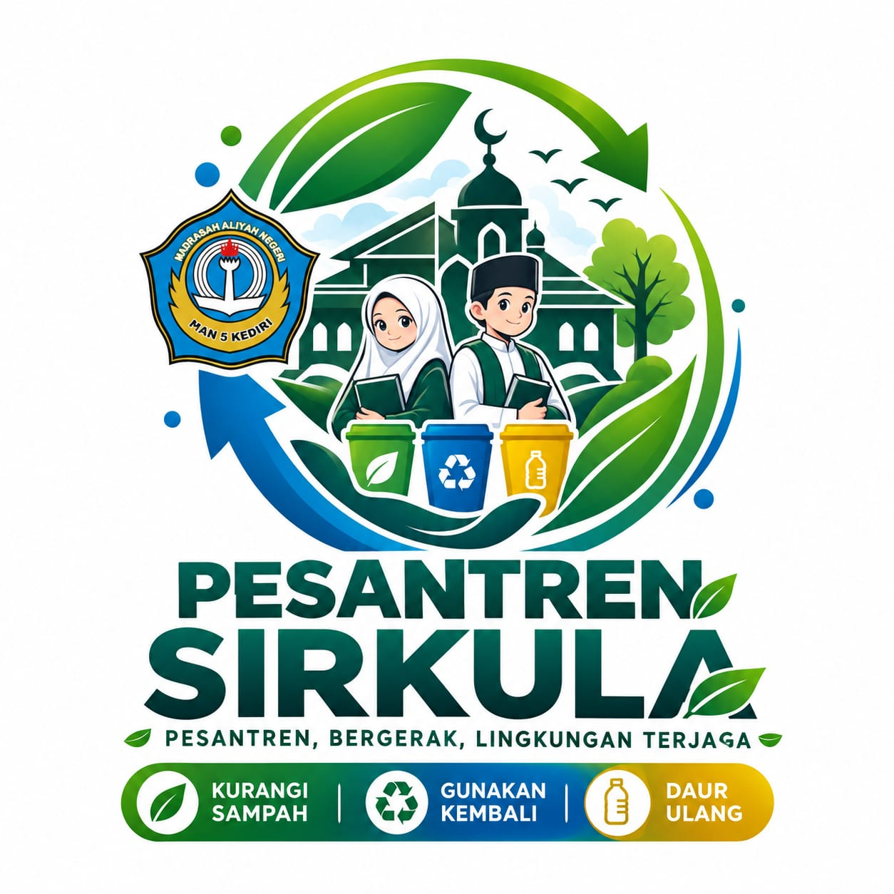

adalah gagasan yang menjadikan Pesantren sebagai pusat pembelajaran, inovasi, dan kolaborasi dalam pengelolaan sampah.Melalui SIRKULA, santri tidak hanya belajar tentang lingkungan, tetapi juga ikut menggerakkan perubahan dari Pesantren hingga masyarakat.
Memahami jenis dan pengelolaan sampah.
Memisahkan sampah sesuai jenisnya.
Mencatat jumlah dan jenis material.
Menghubungkan dengan pengelola atau mitra.